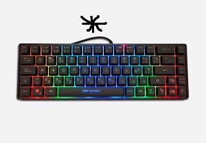
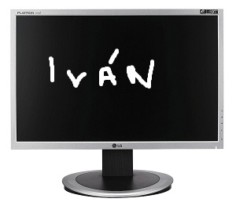

Estos son algunos de los componentes hardware de mi equipo:
Teclado
El teclado es un dispositivo de entrada que utiliza una disposición de teclas, para que actúen como interruptores electrónicos que envían información a la computadora. El teclado tiene entre 99 y 108 teclas; y, está dividido en cuatro bloques: de funciones, alfanumérico, especial y numérico.
Los profesionales sanitarios suelen preferir los teclados ergonómicos, ya que se adaptan mejor a la compleja geometría de nuestro cuerpo y suponen un menor esfuerzo para nuestros músculos, en comparación con los teclados rectangulares convencionales".
El teclado mecánico es aquel en el que cada tecla tiene un interruptor con un sistema mecánico que la acciona. Es decir, al presionar la tecla, la parte dentro del switch se mueve y así completa el “cierre” donde la letra del teclado es registrada. La principal ventaja de los teclados mecánicos es que son rápidos y precisos. Suelen ser grandes con las teclas de los tamaños "de toda la vida", por lo que es más difícil cometer errores pulsando otras teclas que haya al lado sin querer.
Raton
El mouse es un dispositivo de entrada diseñado para manipular objetos en la pantalla de la computadora y ayudarlo a usted, el usuario, a interactuar con la computadora. Sujetar el mouse correctamente: 1) Facilitará su uso y, lo que es más importante, 2) ¡Prevendrá el estrés y la tensión de su cuerpo!
Un ratón ergonómico es un ratón de ordenador que se adapta a la postura natural del usuario. Hay muchos tipos de ratones ergonómicos: ratones verticales, ratones trackball, ratones centrales… Esta guía de compra se centra en los criterios de selección de ratones verticales.
Los ratones ergonómicos tienen una forma que se adapta a tu brazo y muñeca como un guante. Este tipo de ratones se ha diseñado para un ajuste más natural y una mejor posición del antebrazo. Y, al igual que un buen baño caliente, eliminan la presión y permiten aumentar la productividad durante más tiempo.
Monitor
El monitor o pantalla es un dispositivo de salida que nos permite visualizar mediante una interfaz tanto la información introducida por el usuario como la devuelta tras ser procesada por el ordenador.
Un monitor es un dispositivo de salida fundamental en las computadoras de escritorio, diseñado para visualizar gráficamente la información procesada por una computadora. Este dispositivo convierte los datos digitales en imágenes visuales, permitiendo al usuario interactuar y manipular la información presentada. Los monitores más básicos muestran son capaces de mostrar la frecuencia cardíaca, presión arterial y temperatura corporal, sin embargo con los avances de la tecnología, hoy en día también podemos encontrar modelos más avanzados nos dicen cuánto oxígeno transporta la sangre